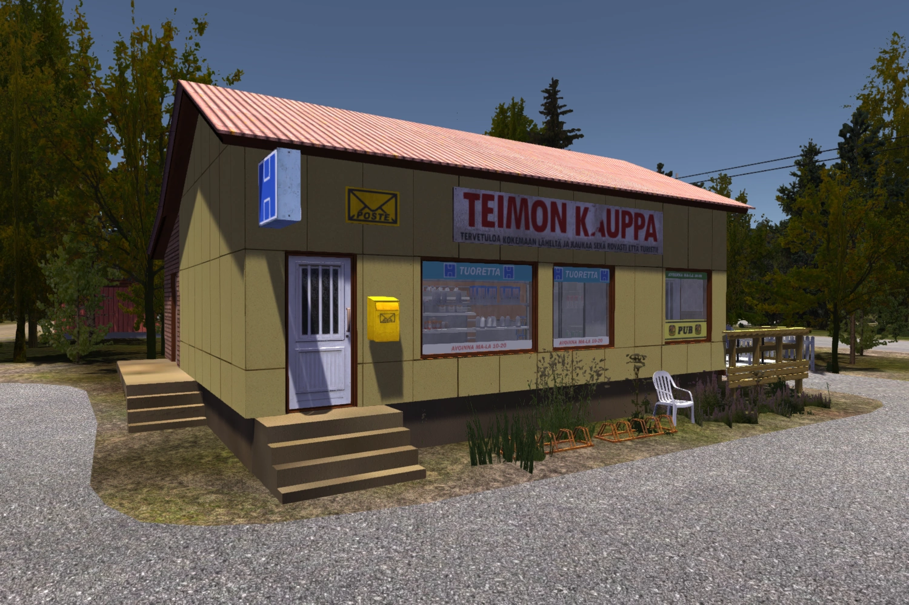
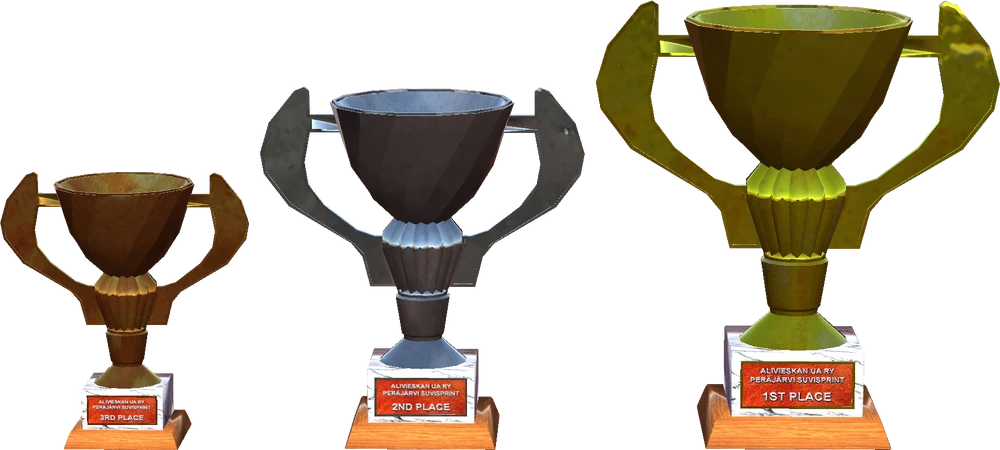

Jelikož jak již jsme zmínili, tato hra vám nedá nic zadarmo, tak si na spoustu věcí musíte přijít sami a nebo vyhledat na internetu. Sem vám dáme pár rad, které by vám mohly výrazně pomoct
ZAČÁTEK HRY
Doporučujeme vždy začít tím, že vezmete pivo, nějaké jídlo, kanistry, sadu nářadí, obálku vyplněnou s částmi pro auto které uznáte za vhodné a naložíte to vše do vlečky zapojené k spolehlivému traktoru Kekmet.
Cíl? Město Peräjärvi. Bereme pouze polní cestu protože traktor stejně úplně není stavěný na vysoké rychlosti. Po cestě se zastavíme u automechanika Fleetariho ve vesnici Loppe,
který bude nejspíš v čase našeho příjězdu zavřeno, ale vraky okolo jeho svatosánku určitě ne. O jeden z nich je opřená stará železná autobusová zastávka a pod ní se nachází 2 části na GT verzi Satsumy:
volant a kryt na ventily. Na druhé straně také můžete najít dlouhé pružiny na zadní část podvozku, ty ale nejsou moc kvalitní a neprojdete s nimi přes STK. Po cestě můžete poblíž servisu na půdě staré vilky umístěné na kopečky najít 4 kola.
Ale pozor na vosy! Držte se u zdi. Další zastávka je stará dřevěná garáž poblíž chatky u jezera pana Ritoranty (Ventti guy). Tam najdete v některých případech starý vrak. Co tam najdete ale ve všech případech, tak jsou disky kol,
které se také používají při verzi GT. Pka již jen po rovince směřujte do města, zaparkujte traktor a vhoďte obálky do schránky umístěné na obchodu Teima. Uložte hru a můžete zamířit na pivko do hospody, také vlastněné Teimem.
Až si dostatečně užijete s místními ožraly, uložte hru dokud neuvidíte Teima vycházet z vchodu pro zaměstnance. Jakmile na svém kole odjede, odpojte vlečku a hopněte do traktoru.
Zajeďte k oknu hospody a přes texturu pomocí tlačítka Q (reach) připojte tažné zařízení k hernímu automatu. Rozjeďte se s traktorem na rychlost 1 - Low a snažte se jej vyrvat přes okno ven.
Po této úspěšné akci zavezte automat za hospodu a využijte šroubovák z vaší sady nářadí. Otevřete zadní kryt automatu a vybírejte mince. Suma se pohybuje mezi 1200 - 11000. Až budete hotoví, uložte hru dokud nebude mít Teimo obchod otevřený a nakupte si.
Může vám také naúčtovat okolo 2500mk za rozbité okno, je to ale pokaždé jinak. Pak už jen vyražte domů a váš trip je u konce. Taky si skočte loďkou na ostrov na jezeře pro různé věci ale hlavně pro kbelík na Kilju.

RALLY
Pro účast v rally potřebujete mít poměrně konkrétní podmínky. Pro začátek samozřejmě musíte mít postavenou Satsumu. K ní a vní ale potřebujete: hasišák s držákem, klec, 4-bodové pásy - k tomu i závodní sedadla, EUROPEISKA, Gommer Gobra nbeo standartní pneumatiky a Satsuma musí mít platnou STK. To byly potřebné věci. Auto byste samozřejmě měli mít patřičně vytuněné a upravené. Většinu designových prvků sundat a zbytečnou váhu vynechat. Po zajetí první části rally (z Peräjärvi do Rykipohja) jste povini do 1 hodiny herního času se dostavit na Parc Fermé, čili parkoviště vedle školy na konci Peräjärvi. Pokud tak neučiníte, bude následovat penalizace o 60 sekund. Po druhé části rally (z Rykipohja do Peräjärvi) se opět zastavte na Parc Fermé, pokud jste byli úspěšní bude na vás čekat jedna z 3 trofejí.

SATSUMA
Při skládání auta si dávej pozor na každý detail – některé šrouby musíš dotáhnout ve správném pořadí a je snadné na něco zapomenout. Nezapomeň si pravidelně ukládat, ideálně po každém významném kroku při stavbě. Jezdi opatrně – silnice jsou zrádné, policie občas měří rychlost a nehody mohou znamenat smrt, což v hardcore režimu znamená konec hry.